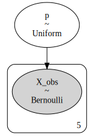
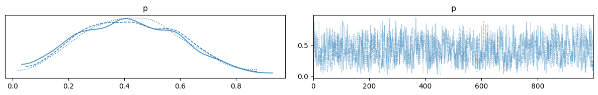

PyMC5#
ベイズ推定用のライブラリ
import arviz as az
import matplotlib.pyplot as plt
import numpy as np
import pandas as pd
import pymc as pm
print(f"Running on PyMC v{pm.__version__}")
WARNING (pytensor.tensor.blas): Using NumPy C-API based implementation for BLAS functions.
Running on PyMC v5.20.0
# コンテキストを作る
model = pm.Model()
with model:
x = pm.Binomial("x", p=0.5, n=5)
x
\[\text{x} \sim \operatorname{Binomial}(5,~0.5)\]
# コンテキスト（with句）の中でならModelと紐づけられる
with model:
# 事前分布の予測値を取得
prior_samples = pm.sample_prior_predictive(random_seed=0, draws=500)
Sampling: [x]
prior_samples
arviz.InferenceData
-
<xarray.Dataset> Size: 8kB Dimensions: (chain: 1, draw: 500) Coordinates: * chain (chain) int64 8B 0 * draw (draw) int64 4kB 0 1 2 3 4 5 6 7 ... 493 494 495 496 497 498 499 Data variables: x (chain, draw) int64 4kB 4 2 3 1 2 3 1 4 2 3 ... 2 3 2 3 2 2 3 2 2 3 Attributes: created_at: 2025-02-05T12:49:42.084562+00:00 arviz_version: 0.20.0 inference_library: pymc inference_library_version: 5.20.0
# arviz: 可視化ライブラリ
import arviz as az
az.summary(prior_samples)
arviz - WARNING - Shape validation failed: input_shape: (1, 500), minimum_shape: (chains=2, draws=4)
| mean | sd | hdi_3% | hdi_97% | mcse_mean | mcse_sd | ess_bulk | ess_tail | r_hat | |
|---|---|---|---|---|---|---|---|---|---|
| x | 2.482 | 1.142 | 0.0 | 4.0 | 0.05 | 0.037 | 513.0 | 441.0 | NaN |
import numpy as np
x_samples: np.array = prior_samples["prior"]["x"].values
az.plot_dist(x_samples)
<Axes: >
モデルの定義とグラフ表記#
import pymc as pm
import numpy as np
# 観測値
X = np.array([1, 0, 0, 1, 0])
model = pm.Model()
with model:
# パラメータpが一様分布に従うと定義
p = pm.Uniform("p", lower=0.0, upper=1.0)
# 観測値Xがベルヌーイ分布に従うと定義
X_obs = pm.Bernoulli("X_obs", p=p, observed=X)
# モデルをGraphvizで表示
pm.model_to_graphviz(model)

MCMC#
with model:
idata = pm.sample(
chains=3,
tune=1000, # バーンイン期間の、捨てるサンプル数
draws=1000, # 採用するサンプル数
random_seed=0,
)
Initializing NUTS using jitter+adapt_diag...
Multiprocess sampling (3 chains in 2 jobs)
NUTS: [p]
Sampling 3 chains for 1_000 tune and 1_000 draw iterations (3_000 + 3_000 draws total) took 2 seconds.
We recommend running at least 4 chains for robust computation of convergence diagnostics
# 各chainsの結果を表示
az.plot_trace(idata)
plt.tight_layout()

az.plot_posterior(idata)
<Axes: title={'center': 'p'}>
az.summary(idata)
| mean | sd | hdi_3% | hdi_97% | mcse_mean | mcse_sd | ess_bulk | ess_tail | r_hat | |
|---|---|---|---|---|---|---|---|---|---|
| p | 0.425 | 0.175 | 0.11 | 0.739 | 0.006 | 0.004 | 1008.0 | 1639.0 | 1.0 |